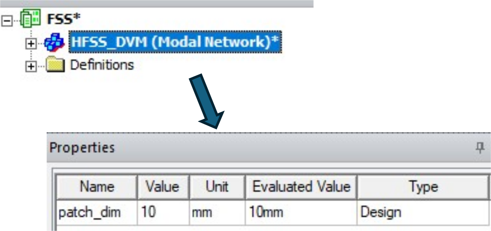
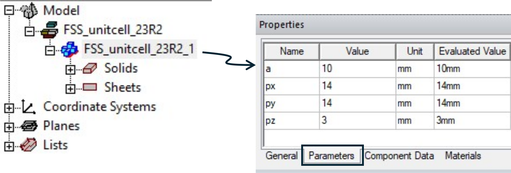
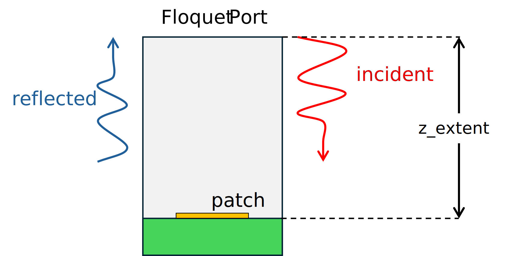

Download this example
Download this example as a Jupyter Notebook or as a Python script.
Frequency Selective Surface#
This example shows how to use PyAEDT to model and simulate a frequency-selective surface (FSS) by applying the periodic (Floquet) boundary condition at the boundaries of a unit cell.
Keywords: HFSS, FSS, Floquet.
Prerequisites#
Perform imports#
[1]:
import tempfile
import time
from pathlib import Path
import ansys.aedt.core
from ansys.aedt.core.examples.downloads import download_file
Define constants#
Constants help ensure consistency and avoid repetition throughout the example.
[2]:
AEDT_VERSION = "2025.2"
NG_MODE = False # Open AEDT UI when it is launched.
Create temporary directory#
Create a temporary working directory. The name of the working folder is stored in temp_folder.name.
Note: The final cell in the notebook cleans up the temporary folder. If you want to retrieve the AEDT project and data, do so before executing the final cell in the notebook.
[3]:
temp_folder = tempfile.TemporaryDirectory(suffix=".ansys")
temp_path = Path(temp_folder.name)
Launch HFSS#
The Ansys Electronics Desktop (AEDT) will be launched and an HFSS design will be inserted into the project.
[4]:
project_name = temp_path / "FSS.aedt"
hfss = ansys.aedt.core.Hfss(
version=AEDT_VERSION,
project=str(project_name),
design="SquarePatch",
non_graphical=NG_MODE,
solution_type="Modal",
)
PyAEDT INFO: Python version 3.10.11 (tags/v3.10.11:7d4cc5a, Apr 5 2023, 00:38:17) [MSC v.1929 64 bit (AMD64)].
PyAEDT INFO: PyAEDT version 0.25.dev0.
PyAEDT INFO: Initializing new Desktop session.
PyAEDT INFO: Log on console is enabled.
PyAEDT INFO: Log on file C:\Users\ansys\AppData\Local\Temp\pyaedt_ansys_c93206ed-748c-43fe-9060-523a91442485.log is enabled.
PyAEDT INFO: Log on AEDT is disabled.
PyAEDT INFO: Starting new AEDT gRPC session.
PyAEDT INFO: AEDT installation Path C:\Program Files\ANSYS Inc\v252\AnsysEM
PyAEDT INFO: Client application successfully started.
PyAEDT INFO: New AEDT gRPC session session started on port 50051.
PyAEDT INFO: 2025.2 version started with process ID 3888.
PyAEDT WARNING: Service Pack is not detected. PyAEDT is currently connecting in Insecure Mode.
PyAEDT WARNING: Please download and install latest Service Pack to use connect to AEDT in Secure Mode.
PyAEDT INFO: Debug logger is disabled. PyAEDT methods will not be logged.
PyAEDT INFO: Project FSS has been created.
PyAEDT INFO: Added design 'SquarePatch' of type HFSS.
PyAEDT INFO: Aedt Objects correctly read
Define a parameter#
Parameters can be defined in HFSS to run parametric studies. In this example, "patch_dim" will be used to modify the size of a square conducting patch in the center of the FSS.
[5]:
hfss["patch_dim"] = "10mm"
The parameter is assigned to the HFSS design as shown here. 
Model Preparation#
Define the unit cell#
The FSS unit cell will be defined from a 3D component. The 3D component is downloaded from the example data repository and inserted into the HFSS design.
Download the component.
[6]:
component_path = Path(download_file("fss_3d_component", local_path=str(temp_path)))
Get the file name of the 3D component. > Note: It should be the only file in the
component_pathfolder.
[7]:
unit_cell_paths = [f for f in component_path.glob("*.a3dcomp")]
unit_cell_path = unit_cell_paths[0]
Insert the dipole as a 3D component into the HFSS model. the HFSS model.
[8]:
comp = hfss.modeler.insert_3d_component(str(unit_cell_path))
PyAEDT INFO: Modeler class has been initialized! Elapsed time: 0m 1sec
PyAEDT INFO: Parsing C:\Users\ansys\AppData\Local\Temp\tmp97mwoxvr.ansys\FSS.aedt.
PyAEDT INFO: File C:\Users\ansys\AppData\Local\Temp\tmp97mwoxvr.ansys\FSS.aedt correctly loaded. Elapsed time: 0m 0sec
PyAEDT INFO: aedt file load time 0.015642404556274414
You can retrieve the names of all 3D components defined in the HFSS design as shown below. In this case, only one component has been defined.
[9]:
component_names = hfss.modeler.user_defined_component_names
You can also get the name of each component using the name property.
Check that only one 3D component has been placed in the HFSS design.
[10]:
same = comp.name == component_names[0]
if same and len(component_names) == 1:
msg = f"The single 3D component in this HFSS design is named '{comp.name}'."
else:
msg ="Something went wrong!"
print(msg)
The single 3D component in this HFSS design is named 'FSS_unitcell_23R2_1'.
Set component parameters#
The 3D component is a parameteric model.

The HFSS parameter patch_dim can be assigned to the component parameter a to modify the size of the patch in the unit cell.
Note: Multiple instances of a 3D component can be used having different parameter values for each instance. For example, consider creating a “super-cell” having multiple component instances to improve the bandwidth of the FSS.
[11]:
comp.parameters["a"] = "patch_dim"
Extend the solution domain#
Extend the solution domain in the \(+z\) direction. If the Floquet port is placed too close to the 3D structure, evanescent fields on the Floquet port surface can lead to erroneous results.
The unit cell model is extended away from the patch by z_extent. The phase reference will later be moved back to the surface of the FSS by deembedding the port solution.

[12]:
period_x, period_y, z_dim = hfss.modeler.get_bounding_dimension()
z_extent = 2 * (period_x + period_y)
region = hfss.modeler.create_air_region(
z_pos=z_extent,
is_percentage=False,
)
[x_min, y_min, z_min, x_max, y_max, z_max] = region.bounding_box
Assign boundary conditions and sources#
Assign the lattice pair periodic boundary conditions.
[13]:
boundaries = hfss.auto_assign_lattice_pairs(assignment=region.name)
msg = "The periodic boundary conditions are: "
msg += str(boundaries)
print(msg)
The periodic boundary conditions are: ['LatticePair1', 'LatticePair2']
The Floquet port is asigned to the top surface of the solution domain where the plane wave is incident on the FSS. The following arguments define the periodicity of the FSS.
lattice_originlattice_a_endlattice_b_end
The phase reference is deembedded to the surface of the FSS.
[14]:
floquet_boundary = hfss.create_floquet_port(
assignment=region.top_face_z,
lattice_origin=[0, 0, z_max],
lattice_a_end=[0, y_max, z_max],
lattice_b_end=[x_max, 0, z_max],
name="port_z_max",
deembed_distance=z_extent,
)
PyAEDT INFO: Boundary Floquet Port port_z_max has been created.
Define solution setup#
The solution setup specifies details used to run the analysis in HFSS. In this example adaptive mesh refinement runs at 10 GHz while default values are used for all other settings.
The frequency sweep is used to specify the range over which scattering parameters will be calculated.
[15]:
setup = hfss.create_setup("MySetup")
setup.props["Frequency"] = "10GHz"
setup.props["MaximumPasses"] = 10
hfss.create_linear_count_sweep(
setup=setup.name,
units="GHz",
start_frequency=6,
stop_frequency=15,
num_of_freq_points=401,
name="sweep1",
sweep_type="Interpolating",
interpolation_tol=6,
save_fields=False,
)
PyAEDT INFO: Linear count sweep sweep1 has been correctly created.
[15]:
MySetup : sweep1
Run analysis#
Save the project and run the analysis.
[16]:
hfss.save_project()
hfss.analyze()
PyAEDT INFO: Project FSS Saved correctly
PyAEDT INFO: Project FSS Saved correctly
PyAEDT INFO: Solving all design setups. Analysis started...
PyAEDT INFO: Design setup None solved correctly in 0.0h 1.0m 7.0s
[16]:
True
Postprocess#
The syntax used to plot network parameters (S-, Y-, Z-) can be complicated. The method get_traces_for_plot() is helpful to retrieve the names of valid traces to use for ploting.
We’ll plot imaginary impedance, $ :nbsphinx-math:`Im `(Z_{i,j}) $ where $ i $, and $ j $ indices correspond to the two linear polarization states.
[17]:
plot_data = hfss.get_traces_for_plot(category="im(Z")
msg = "The imaginary wave impedance can be displayed using "
msg += "the traces\n"
msg += "".join(["--> " + name + "\n" for name in plot_data])
print(msg)
The imaginary wave impedance can be displayed using the traces
--> im(Z(port_z_max:1,port_z_max:1))
--> im(Z(port_z_max:2,port_z_max:2))
--> im(Z(port_z_max:1,port_z_max:2))
--> im(Z(port_z_max:2,port_z_max:1))
The Floquet port was automatically named “port_z_max”. Due to symmetry, only the first two parameters are unique.
Generate a report in HFSS#
[18]:
report = hfss.post.create_report(plot_data[0:2])
PyAEDT INFO: Parsing C:\Users\ansys\AppData\Local\Temp\tmp97mwoxvr.ansys\FSS.aedt.
PyAEDT INFO: File C:\Users\ansys\AppData\Local\Temp\tmp97mwoxvr.ansys\FSS.aedt correctly loaded. Elapsed time: 0m 0sec
PyAEDT INFO: aedt file load time 0.03170180320739746
PyAEDT INFO: PostProcessor class has been initialized! Elapsed time: 0m 0sec
PyAEDT INFO: PostProcessor class has been initialized! Elapsed time: 0m 0sec
PyAEDT INFO: Post class has been initialized! Elapsed time: 0m 0sec
PyAEDT WARNING: No report category provided. Automatically identified Modal Solution Data
Retrieve data for postprocessing in Matplotlib#
The method get_solution_data() retrieves data from the report in HFSS and makes it available for postprocessing with Matplotlib.
[19]:
solution = report.get_solution_data()
plt = solution.plot(solution.expressions)
PyAEDT INFO: Solution Data Correctly Loaded.
Time to initialize solution data:0.015685319900512695
Time to initialize solution data:0.015685319900512695
Release AEDT#
[20]:
hfss.release_desktop()
# Wait 3 seconds to allow AEDT to shut down before cleaning the temporary directory.
time.sleep(3)
PyAEDT INFO: Desktop has been released and closed.
Clean up#
All project files are saved in the folder temp_folder.name. If you’ve run this example as a Jupyter notebook, you can retrieve those project files. The following cell removes all temporary files, including the project folder.
[21]:
temp_folder.cleanup()
Download this example
Download this example as a Jupyter Notebook or as a Python script.